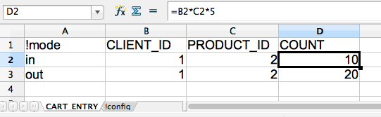

Created by Christophe Pollet
A test fixture is something used to consistently test some item, device, or piece of software.
For instance by loading a database with a predefined set of data.
To provide easy database fixture loading in a Spring/Hibernate environment.
The following fixture formats are implemented:
And it's easy to implement your own if needed!
<dependency>
<groupId>net.cpollet.jixture</groupId>
<artifactId>jixture-hibernate3</artifactId>
<version>1.0.0.rc3</version>
</dependency>
<!-- you have to define a transactionManager bean somewhere -->
<alias name="transactionManager" alias="jixture.core.transactionManager"/>
<!-- bring the magic -->
<import resource="classpath:/spring/jixture-core-context.xml"/>
@RunWith(SpringJUnit4ClassRunner.class)
@ContextConfiguration(locations = {"classpath:/spring/test-context.xml"})
@DirtiesContext(classMode = DirtiesContext.ClassMode.AFTER_EACH_TEST_METHOD)
@Transactional
public class TestSomeClass {
}
@Autowired
@Qualifier("jixture.noCommitDatabaseTestSupport")
private DatabaseTestSupport databaseTestSupport;
@Before
public void setUp() {
Data data = new Data();
data.setId(1L);
data.setValue("value");
databaseTestSupport.addFixtures(new MappingFixture(data)).loadFixtures();
}
@Before
public void setUp() {
databaseTestSupport.addFixtures(new XmlFileFixture("dbunit-data.xml")).loadFixtures();
}
And that's it
Bring jixture.commitDatabaseTestSupport:
@Autowired
@Qualifier("jixture.commitDatabaseTestSupport")
private DatabaseTestSupport commitDatabaseTestSupport;
@Autowired
@Qualifier("jixture.noCommitDatabaseTestSupport")
private DatabaseTestSupport noCommitDatabaseTestSupport;
Et voilà
<!-- For XLSX -->
<dependency>
<groupId>org.apache.poi</groupId>
<artifactId>poi-ooxml</artifactId>
<version>3.9</version>
</dependency>
<!-- For XLS -->
<dependency>
<groupId>org.apache.poi</groupId>
<artifactId>poi</artifactId>
<version>3.9</version>
</dependency>
@Before
public void setUp() {
databaseTestSupport
.addFixtures(new XlsFileFixture("fixtures.xls")) // loads XLS file
.addFixtures(new XlsxFileFixture("fixtures.xlsx")) // loads XLSX file
.loadFixtures();
}

Inline script
@Before
public void setUp() {
databaseTestSupport
.addFixtures(new SqlFixture(new String[] {
"insert into users ...", "insert into products ..."
}, User.class, Product.class))
.loadFixtures();
}
External script
@Before
public void setUp() {
databaseTestSupport
.addFixtures(new SqlFileFixture("classpath:tests/fixtures/sql-fixture.sql",
User.class, Product.class))
.loadFixtures();
}
@Before
public void setUp() {
databaseTestSupport
.addFixtures(new SpringFixture("classpath:tests/fixtures/spring-fixture.xml",
User.class, Product.class))
.loadFixtures();
}
When you want to generate many different mapping that kind of look the same. For instance, orders that can be in one of the following statuses:
And submitted from different countries:
<dependency>
<groupId>commons-beanutils</groupId>
<artifactId>commons-beanutils</artifactId>
<version>1.9.2</version>
</dependency>
<dependency>
<groupId>uk.com.robust-it</groupId>
<artifactId>cloning</artifactId>
<version>1.9.0</version>
</dependency>
@Before
public void setUp() {
Order order = new Order();
order.setOrderDate(new Date());
GeneratedFixture generatedFixture = new GeneratedFixture();
generatedFixture
.addGenerators(GeneratedFixture
.from(order)
.addFieldGenerator("id", FieldGenerators.sequence(1))
.addFieldGenerator("status", FieldGenerators.in(
Status.NEW, Status.VALIDATED, Status.IN_PREPARATION, ...
)
.addFieldGenerator("country", FieldGenerator.in("Switzerland", "France", "USA")
.addFieldGenerator("totalPrice", FieldGenerators.sequence(1, 5, 2))
);
databaseTestSupport.addFixtures(generatedFixture).loadFixtures();
}
jixture support several field value generators:
When all you want to do is to (partially) clean the database
@Before
public void setUp() {
CleaningFixture fixture = new CleaningFixture(Product.class, Client.class, Order.class);
databaseTestSupport.addFixtures(fixture).loadFixtures();
}
What is this???
When loading fixture it may be convinient to get a subset of the inserted data
This is what an extractor does
Not all fixture sources can be used together with extraction.
The following can:
To make a long story short, all Fixture that implement ExtractionCapableFixture
<dependency>
<groupId>org.hamcrest</groupId>
<artifactId>hamcrest-core</artifactId>
<version>1.3</version>
</dependency>
fixture.addExtractorMatcher(ExtractorMatcher.create(new org.hamcrest.core.IsAnything()));
// extracor matcher can have a name
ExtractionResult extractionResult = fixture.getExtractionResult();
List entities = extractionResult.getEntities();
// or
// extractionResult.getEntities(Model.class);
// extractionResult.getEntities("extractor name");
// extractionResult.getEntities("extractor name", Model.class);